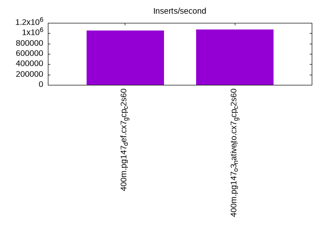
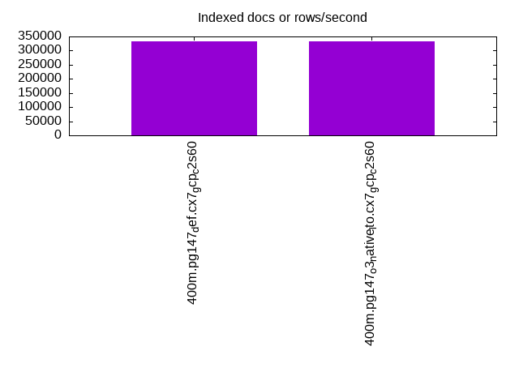
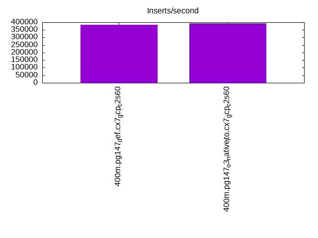
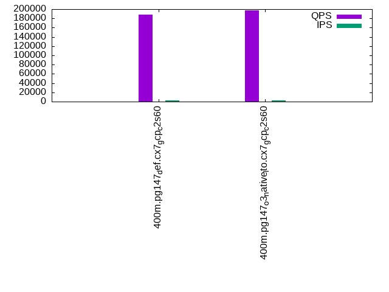
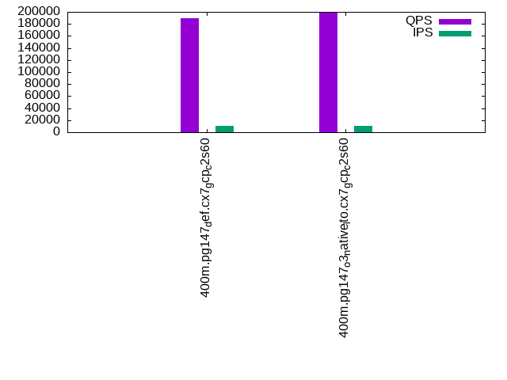
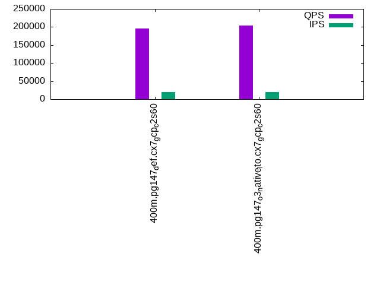

This is a report for the insert benchmark with 400M docs and 20 client(s). It is generated by scripts (bash, awk, sed) and Tufte might not be impressed. An overview of the insert benchmark is here and a short update is here. Below, by DBMS, I mean DBMS+version.config. An example is my8020.c10b40 where my means MySQL, 8020 is version 8.0.20 and c10b40 is the name for the configuration file.
The test server is a c2-standard-60 from GCP with 30 cores, hyperthreading disabled, 240G RAM and 3T from XFS and SW RAID 0 striped over 8 local NVMe drives. The benchmark was run with 20 clients and there were 1 or 2 connections per client (1 for queries, 1 for inserts). The benchmark loads 400M rows without secondary indexes, creates secondary indexes, loads another 400M rows then does 3 read+write tests for one hour each that do queries as fast as possible with 100, 500 and then 1000 writes/second/client concurrent with the queries. Each read-write test runs for 1800 seconds. The test was configured to use one table. The database is cached by the storage engine and the only IO is for writes. Clients and the DBMS share one server. The per-database configs are in the per-database subdirectories here.
The tested DBMS are:
The numbers are inserts/s for l.i0 and l.i1, indexed docs (or rows) /s for l.x and queries/s for q*.2. The values are the average rate over the entire test for inserts (IPS) and queries (QPS). The range of values for IPS and QPS is split into 3 parts: bottom 25%, middle 50%, top 25%. Values in the bottom 25% have a red background, values in the top 25% have a green background and values in the middle have no color. A gray background is used for values that can be ignored because the DBMS did not sustain the target insert rate. Red backgrounds are not used when the minimum value is within 80% of the max value.
| dbms | l.i0 | l.x | l.i1 | q100.1 | q500.1 | q1000.1 |
|---|---|---|---|---|---|---|
| 400m.pg147_def.cx7_gcp_c2s60 | 1052632 | 332033 | 384986 | 188429 | 189869 | 195090 |
| 400m.pg147_o3_native_lto.cx7_gcp_c2s60 | 1072386 | 331483 | 392157 | 196892 | 198364 | 203390 |
This lists the average rate of inserts/s for the tests that do inserts concurrent with queries. For such tests the query rate is listed in the table above. The read+write tests are setup so that the insert rate should match the target rate every second. Cells that are not at least 95% of the target have a red background to indicate a failure to satisfy the target.
| dbms | q100.1 | q500.1 | q1000.1 |
|---|---|---|---|
| pg147_def.cx7_gcp_c2s60 | 1976 | 9890 | 19769 |
| pg147_o3_native_lto.cx7_gcp_c2s60 | 1976 | 9885 | 19769 |
| target | 2000 | 10000 | 20000 |
l.i0: load without secondary indexes. Graphs for performance per 1-second interval are here.
Average throughput:
Insert response time histogram: each cell has the percentage of responses that take <= the time in the header and max is the max response time in seconds. For the max column values in the top 25% of the range have a red background and in the bottom 25% of the range have a green background. The red background is not used when the min value is within 80% of the max value.
| dbms | 256us | 1ms | 4ms | 16ms | 64ms | 256ms | 1s | 4s | 16s | gt | max |
|---|---|---|---|---|---|---|---|---|---|---|---|
| pg147_def.cx7_gcp_c2s60 | 14.988 | 81.429 | 3.519 | 0.024 | 0.025 | 0.014 | 0.001 | 1.218 | |||
| pg147_o3_native_lto.cx7_gcp_c2s60 | 22.426 | 74.038 | 3.478 | 0.019 | 0.025 | 0.013 | 0.001 | 1.364 |
Performance metrics for the DBMS listed above. Some are normalized by throughput, others are not. Legend for results is here.
ips qps rps rmbps wps wmbps rpq rkbpq wpi wkbpi csps cpups cspq cpupq dbgb1 dbgb2 rss maxop p50 p99 tag 1052632 0 0 0.0 1616.5 406.4 0.000 0.000 0.002 0.395 301339 57.5 0.286 16 43.0 117.9 NA 1.218 59034 7394 400m.pg147_def.cx7_gcp_c2s60 1072386 0 0 0.0 1621.8 407.2 0.000 0.000 0.002 0.389 331475 56.6 0.309 16 43.0 116.5 NA 1.364 59833 12990 400m.pg147_o3_native_lto.cx7_gcp_c2s60
l.x: create secondary indexes.
Average throughput:
Performance metrics for the DBMS listed above. Some are normalized by throughput, others are not. Legend for results is here.
ips qps rps rmbps wps wmbps rpq rkbpq wpi wkbpi csps cpups cspq cpupq dbgb1 dbgb2 rss maxop p50 p99 tag 332033 0 1788 18.2 394.1 93.5 0.005 0.056 0.001 0.288 925 3.2 0.003 3 78.3 153.2 0.0 0.002 NA NA 400m.pg147_def.cx7_gcp_c2s60 331483 0 1607 17.2 399.6 95.1 0.005 0.053 0.001 0.294 1304 3.2 0.004 3 78.3 152.5 0.0 0.002 NA NA 400m.pg147_o3_native_lto.cx7_gcp_c2s60
l.i1: continue load after secondary indexes created. Graphs for performance per 1-second interval are here.
Average throughput:
Insert response time histogram: each cell has the percentage of responses that take <= the time in the header and max is the max response time in seconds. For the max column values in the top 25% of the range have a red background and in the bottom 25% of the range have a green background. The red background is not used when the min value is within 80% of the max value.
| dbms | 256us | 1ms | 4ms | 16ms | 64ms | 256ms | 1s | 4s | 16s | gt | max |
|---|---|---|---|---|---|---|---|---|---|---|---|
| pg147_def.cx7_gcp_c2s60 | 94.337 | 4.663 | 0.961 | 0.023 | 0.016 | 0.879 | |||||
| pg147_o3_native_lto.cx7_gcp_c2s60 | 94.401 | 4.571 | 0.993 | 0.022 | 0.012 | 0.001 | 1.155 |
Performance metrics for the DBMS listed above. Some are normalized by throughput, others are not. Legend for results is here.
ips qps rps rmbps wps wmbps rpq rkbpq wpi wkbpi csps cpups cspq cpupq dbgb1 dbgb2 rss maxop p50 p99 tag 384986 0 3034 26.9 2324.5 414.0 0.008 0.072 0.006 1.101 277761 53.5 0.721 42 170.2 328.4 0.0 0.879 23384 1798 400m.pg147_def.cx7_gcp_c2s60 392157 0 2982 27.3 2367.0 421.9 0.008 0.071 0.006 1.102 298429 52.7 0.761 40 170.2 330.7 0.0 1.155 24074 1648 400m.pg147_o3_native_lto.cx7_gcp_c2s60
q100.1: range queries with 100 insert/s per client. Graphs for performance per 1-second interval are here.
Average throughput:
Query response time histogram: each cell has the percentage of responses that take <= the time in the header and max is the max response time in seconds. For max values in the top 25% of the range have a red background and in the bottom 25% of the range have a green background. The red background is not used when the min value is within 80% of the max value.
| dbms | 256us | 1ms | 4ms | 16ms | 64ms | 256ms | 1s | 4s | 16s | gt | max |
|---|---|---|---|---|---|---|---|---|---|---|---|
| pg147_def.cx7_gcp_c2s60 | 99.970 | 0.023 | 0.006 | 0.001 | nonzero | 0.026 | |||||
| pg147_o3_native_lto.cx7_gcp_c2s60 | 99.975 | 0.018 | 0.006 | 0.001 | nonzero | 0.028 |
Insert response time histogram: each cell has the percentage of responses that take <= the time in the header and max is the max response time in seconds. For max values in the top 25% of the range have a red background and in the bottom 25% of the range have a green background. The red background is not used when the min value is within 80% of the max value.
| dbms | 256us | 1ms | 4ms | 16ms | 64ms | 256ms | 1s | 4s | 16s | gt | max |
|---|---|---|---|---|---|---|---|---|---|---|---|
| pg147_def.cx7_gcp_c2s60 | 98.875 | 0.883 | 0.242 | 0.052 | |||||||
| pg147_o3_native_lto.cx7_gcp_c2s60 | 99.018 | 0.808 | 0.174 | 0.036 |
Performance metrics for the DBMS listed above. Some are normalized by throughput, others are not. Legend for results is here.
ips qps rps rmbps wps wmbps rpq rkbpq wpi wkbpi csps cpups cspq cpupq dbgb1 dbgb2 rss maxop p50 p99 tag 1976 188429 0 0.0 2493.3 67.8 0.000 0.000 1.262 35.156 673570 62.7 3.575 100 171.1 304.7 0.0 0.026 9350 9046 400m.pg147_def.cx7_gcp_c2s60 1976 196892 0 0.0 2532.4 68.8 0.000 0.000 1.282 35.633 702693 62.7 3.569 96 171.1 315.6 0.0 0.028 9817 9477 400m.pg147_o3_native_lto.cx7_gcp_c2s60
q500.1: range queries with 500 insert/s per client. Graphs for performance per 1-second interval are here.
Average throughput:
Query response time histogram: each cell has the percentage of responses that take <= the time in the header and max is the max response time in seconds. For max values in the top 25% of the range have a red background and in the bottom 25% of the range have a green background. The red background is not used when the min value is within 80% of the max value.
| dbms | 256us | 1ms | 4ms | 16ms | 64ms | 256ms | 1s | 4s | 16s | gt | max |
|---|---|---|---|---|---|---|---|---|---|---|---|
| pg147_def.cx7_gcp_c2s60 | 99.908 | 0.061 | 0.027 | 0.003 | nonzero | 0.034 | |||||
| pg147_o3_native_lto.cx7_gcp_c2s60 | 99.917 | 0.053 | 0.026 | 0.003 | nonzero | 0.033 |
Insert response time histogram: each cell has the percentage of responses that take <= the time in the header and max is the max response time in seconds. For max values in the top 25% of the range have a red background and in the bottom 25% of the range have a green background. The red background is not used when the min value is within 80% of the max value.
| dbms | 256us | 1ms | 4ms | 16ms | 64ms | 256ms | 1s | 4s | 16s | gt | max |
|---|---|---|---|---|---|---|---|---|---|---|---|
| pg147_def.cx7_gcp_c2s60 | 52.104 | 27.768 | 19.844 | 0.284 | 0.176 | ||||||
| pg147_o3_native_lto.cx7_gcp_c2s60 | 52.797 | 27.533 | 19.385 | 0.284 | 0.174 |
Performance metrics for the DBMS listed above. Some are normalized by throughput, others are not. Legend for results is here.
ips qps rps rmbps wps wmbps rpq rkbpq wpi wkbpi csps cpups cspq cpupq dbgb1 dbgb2 rss maxop p50 p99 tag 9890 189869 0 0.0 4623.3 145.2 0.000 0.000 0.467 15.030 665466 64.0 3.505 101 176.0 260.8 0.0 0.034 9350 8982 400m.pg147_def.cx7_gcp_c2s60 9885 198364 0 0.0 4593.5 143.8 0.000 0.000 0.465 14.902 694761 63.5 3.502 96 176.0 262.0 0.0 0.033 9909 9465 400m.pg147_o3_native_lto.cx7_gcp_c2s60
q1000.1: range queries with 1000 insert/s per client. Graphs for performance per 1-second interval are here.
Average throughput:
Query response time histogram: each cell has the percentage of responses that take <= the time in the header and max is the max response time in seconds. For max values in the top 25% of the range have a red background and in the bottom 25% of the range have a green background. The red background is not used when the min value is within 80% of the max value.
| dbms | 256us | 1ms | 4ms | 16ms | 64ms | 256ms | 1s | 4s | 16s | gt | max |
|---|---|---|---|---|---|---|---|---|---|---|---|
| pg147_def.cx7_gcp_c2s60 | 99.856 | 0.101 | 0.038 | 0.004 | nonzero | 0.043 | |||||
| pg147_o3_native_lto.cx7_gcp_c2s60 | 99.867 | 0.093 | 0.037 | 0.004 | nonzero | 0.030 |
Insert response time histogram: each cell has the percentage of responses that take <= the time in the header and max is the max response time in seconds. For max values in the top 25% of the range have a red background and in the bottom 25% of the range have a green background. The red background is not used when the min value is within 80% of the max value.
| dbms | 256us | 1ms | 4ms | 16ms | 64ms | 256ms | 1s | 4s | 16s | gt | max |
|---|---|---|---|---|---|---|---|---|---|---|---|
| pg147_def.cx7_gcp_c2s60 | 60.035 | 27.081 | 12.603 | 0.282 | 0.246 | ||||||
| pg147_o3_native_lto.cx7_gcp_c2s60 | 61.090 | 26.286 | 12.363 | 0.261 | 0.179 |
Performance metrics for the DBMS listed above. Some are normalized by throughput, others are not. Legend for results is here.
ips qps rps rmbps wps wmbps rpq rkbpq wpi wkbpi csps cpups cspq cpupq dbgb1 dbgb2 rss maxop p50 p99 tag 19769 195090 0 0.0 4743.5 205.1 0.000 0.000 0.240 10.623 658764 65.2 3.377 100 189.4 269.0 0.0 0.043 9685 9030 400m.pg147_def.cx7_gcp_c2s60 19769 203390 0 0.0 4751.6 203.2 0.000 0.000 0.240 10.528 686455 65.0 3.375 96 189.4 269.8 0.0 0.030 10101 9430 400m.pg147_o3_native_lto.cx7_gcp_c2s60
l.i0: load without secondary indexes
Performance metrics for all DBMS, not just the ones listed above. Some are normalized by throughput, others are not. Legend for results is here.
ips qps rps rmbps wps wmbps rpq rkbpq wpi wkbpi csps cpups cspq cpupq dbgb1 dbgb2 rss maxop p50 p99 tag 1052632 0 0 0.0 1616.5 406.4 0.000 0.000 0.002 0.395 301339 57.5 0.286 16 43.0 117.9 NA 1.218 59034 7394 400m.pg147_def.cx7_gcp_c2s60 1072386 0 0 0.0 1621.8 407.2 0.000 0.000 0.002 0.389 331475 56.6 0.309 16 43.0 116.5 NA 1.364 59833 12990 400m.pg147_o3_native_lto.cx7_gcp_c2s60
l.x: create secondary indexes
Performance metrics for all DBMS, not just the ones listed above. Some are normalized by throughput, others are not. Legend for results is here.
ips qps rps rmbps wps wmbps rpq rkbpq wpi wkbpi csps cpups cspq cpupq dbgb1 dbgb2 rss maxop p50 p99 tag 332033 0 1788 18.2 394.1 93.5 0.005 0.056 0.001 0.288 925 3.2 0.003 3 78.3 153.2 0.0 0.002 NA NA 400m.pg147_def.cx7_gcp_c2s60 331483 0 1607 17.2 399.6 95.1 0.005 0.053 0.001 0.294 1304 3.2 0.004 3 78.3 152.5 0.0 0.002 NA NA 400m.pg147_o3_native_lto.cx7_gcp_c2s60
l.i1: continue load after secondary indexes created
Performance metrics for all DBMS, not just the ones listed above. Some are normalized by throughput, others are not. Legend for results is here.
ips qps rps rmbps wps wmbps rpq rkbpq wpi wkbpi csps cpups cspq cpupq dbgb1 dbgb2 rss maxop p50 p99 tag 384986 0 3034 26.9 2324.5 414.0 0.008 0.072 0.006 1.101 277761 53.5 0.721 42 170.2 328.4 0.0 0.879 23384 1798 400m.pg147_def.cx7_gcp_c2s60 392157 0 2982 27.3 2367.0 421.9 0.008 0.071 0.006 1.102 298429 52.7 0.761 40 170.2 330.7 0.0 1.155 24074 1648 400m.pg147_o3_native_lto.cx7_gcp_c2s60
q100.1: range queries with 100 insert/s per client
Performance metrics for all DBMS, not just the ones listed above. Some are normalized by throughput, others are not. Legend for results is here.
ips qps rps rmbps wps wmbps rpq rkbpq wpi wkbpi csps cpups cspq cpupq dbgb1 dbgb2 rss maxop p50 p99 tag 1976 188429 0 0.0 2493.3 67.8 0.000 0.000 1.262 35.156 673570 62.7 3.575 100 171.1 304.7 0.0 0.026 9350 9046 400m.pg147_def.cx7_gcp_c2s60 1976 196892 0 0.0 2532.4 68.8 0.000 0.000 1.282 35.633 702693 62.7 3.569 96 171.1 315.6 0.0 0.028 9817 9477 400m.pg147_o3_native_lto.cx7_gcp_c2s60
q500.1: range queries with 500 insert/s per client
Performance metrics for all DBMS, not just the ones listed above. Some are normalized by throughput, others are not. Legend for results is here.
ips qps rps rmbps wps wmbps rpq rkbpq wpi wkbpi csps cpups cspq cpupq dbgb1 dbgb2 rss maxop p50 p99 tag 9890 189869 0 0.0 4623.3 145.2 0.000 0.000 0.467 15.030 665466 64.0 3.505 101 176.0 260.8 0.0 0.034 9350 8982 400m.pg147_def.cx7_gcp_c2s60 9885 198364 0 0.0 4593.5 143.8 0.000 0.000 0.465 14.902 694761 63.5 3.502 96 176.0 262.0 0.0 0.033 9909 9465 400m.pg147_o3_native_lto.cx7_gcp_c2s60
q1000.1: range queries with 1000 insert/s per client
Performance metrics for all DBMS, not just the ones listed above. Some are normalized by throughput, others are not. Legend for results is here.
ips qps rps rmbps wps wmbps rpq rkbpq wpi wkbpi csps cpups cspq cpupq dbgb1 dbgb2 rss maxop p50 p99 tag 19769 195090 0 0.0 4743.5 205.1 0.000 0.000 0.240 10.623 658764 65.2 3.377 100 189.4 269.0 0.0 0.043 9685 9030 400m.pg147_def.cx7_gcp_c2s60 19769 203390 0 0.0 4751.6 203.2 0.000 0.000 0.240 10.528 686455 65.0 3.375 96 189.4 269.8 0.0 0.030 10101 9430 400m.pg147_o3_native_lto.cx7_gcp_c2s60
Insert response time histogram
256us 1ms 4ms 16ms 64ms 256ms 1s 4s 16s gt max tag 0.000 14.988 81.429 3.519 0.024 0.025 0.014 0.001 0.000 0.000 1.218 pg147_def.cx7_gcp_c2s60 0.000 22.426 74.038 3.478 0.019 0.025 0.013 0.001 0.000 0.000 1.364 pg147_o3_native_lto.cx7_gcp_c2s60
TODO - determine whether there is data for create index response time
Insert response time histogram
256us 1ms 4ms 16ms 64ms 256ms 1s 4s 16s gt max tag 0.000 0.000 94.337 4.663 0.961 0.023 0.016 0.000 0.000 0.000 0.879 pg147_def.cx7_gcp_c2s60 0.000 0.000 94.401 4.571 0.993 0.022 0.012 0.001 0.000 0.000 1.155 pg147_o3_native_lto.cx7_gcp_c2s60
Query response time histogram
256us 1ms 4ms 16ms 64ms 256ms 1s 4s 16s gt max tag 99.970 0.023 0.006 0.001 nonzero 0.000 0.000 0.000 0.000 0.000 0.026 pg147_def.cx7_gcp_c2s60 99.975 0.018 0.006 0.001 nonzero 0.000 0.000 0.000 0.000 0.000 0.028 pg147_o3_native_lto.cx7_gcp_c2s60
Insert response time histogram
256us 1ms 4ms 16ms 64ms 256ms 1s 4s 16s gt max tag 0.000 0.000 98.875 0.883 0.242 0.000 0.000 0.000 0.000 0.000 0.052 pg147_def.cx7_gcp_c2s60 0.000 0.000 99.018 0.808 0.174 0.000 0.000 0.000 0.000 0.000 0.036 pg147_o3_native_lto.cx7_gcp_c2s60
Query response time histogram
256us 1ms 4ms 16ms 64ms 256ms 1s 4s 16s gt max tag 99.908 0.061 0.027 0.003 nonzero 0.000 0.000 0.000 0.000 0.000 0.034 pg147_def.cx7_gcp_c2s60 99.917 0.053 0.026 0.003 nonzero 0.000 0.000 0.000 0.000 0.000 0.033 pg147_o3_native_lto.cx7_gcp_c2s60
Insert response time histogram
256us 1ms 4ms 16ms 64ms 256ms 1s 4s 16s gt max tag 0.000 0.000 52.104 27.768 19.844 0.284 0.000 0.000 0.000 0.000 0.176 pg147_def.cx7_gcp_c2s60 0.000 0.000 52.797 27.533 19.385 0.284 0.000 0.000 0.000 0.000 0.174 pg147_o3_native_lto.cx7_gcp_c2s60
Query response time histogram
256us 1ms 4ms 16ms 64ms 256ms 1s 4s 16s gt max tag 99.856 0.101 0.038 0.004 nonzero 0.000 0.000 0.000 0.000 0.000 0.043 pg147_def.cx7_gcp_c2s60 99.867 0.093 0.037 0.004 nonzero 0.000 0.000 0.000 0.000 0.000 0.030 pg147_o3_native_lto.cx7_gcp_c2s60
Insert response time histogram
256us 1ms 4ms 16ms 64ms 256ms 1s 4s 16s gt max tag 0.000 0.000 60.035 27.081 12.603 0.282 0.000 0.000 0.000 0.000 0.246 pg147_def.cx7_gcp_c2s60 0.000 0.000 61.090 26.286 12.363 0.261 0.000 0.000 0.000 0.000 0.179 pg147_o3_native_lto.cx7_gcp_c2s60